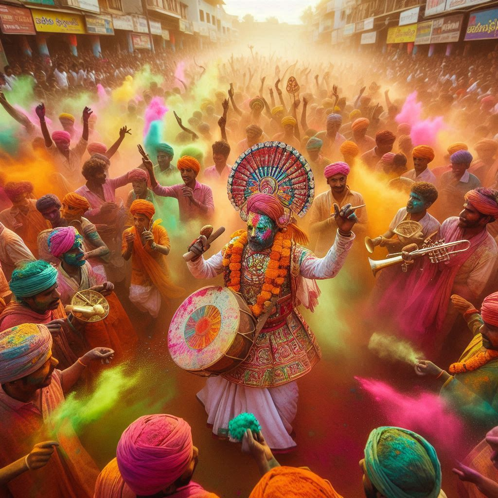
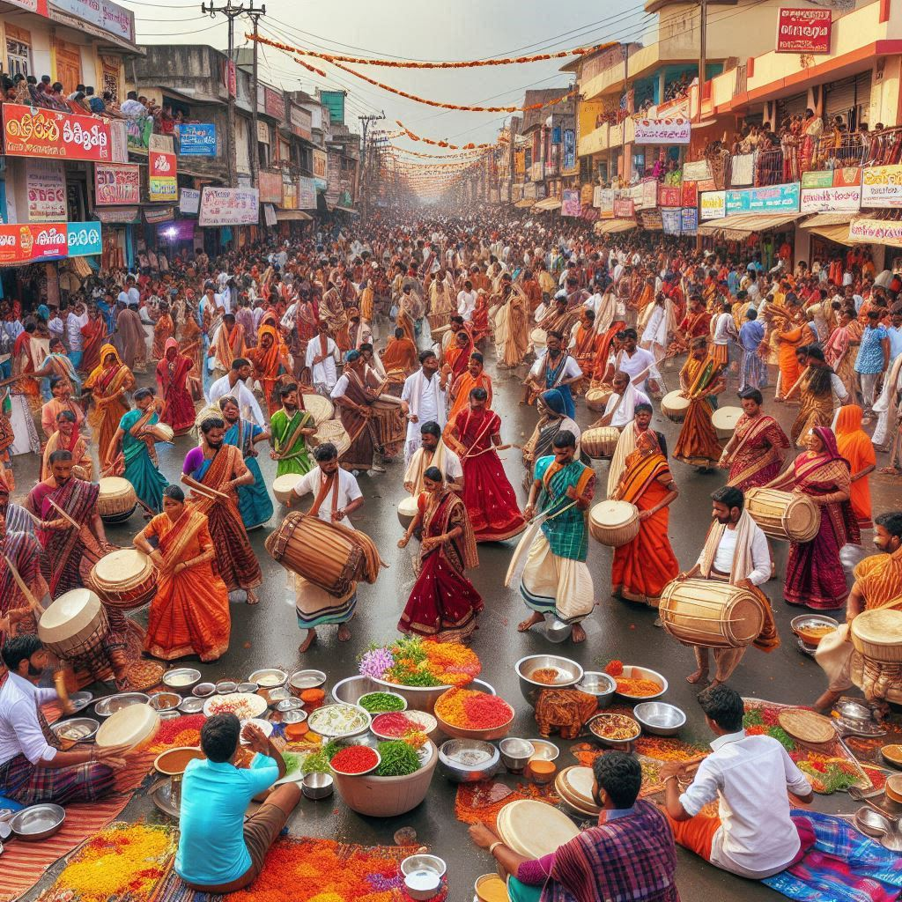

Andhra Pradesh, a culturally rich state in southern India, celebrates numerous festivals with great enthusiasm and devotion. These festivals reflect the state’s deep-rooted traditions, religious diversity, and vibrant cultural practices. Here are some of the most important festivals celebrated in Andhra Pradesh:
1. Ugadi
- Time of Celebration: March/April (First day of the Hindu lunisolar calendar)
- Significance: Ugadi is the Telugu New Year and marks the beginning of a new era. It signifies the start of a new harvest season.
- Highlights: People clean and decorate their homes with mango leaves and rangolis. Special prayers are offered in temples. A traditional dish called Ugadi Pachadi is prepared, which includes ingredients representing different flavors like sweet, sour, and bitter, symbolizing the different emotions of life. Families get together to celebrate and exchange gifts.
2. Makar Sankranti
- Time of Celebration: January (Transition of the sun into Capricorn)
- Significance: Makar Sankranti is a harvest festival, celebrating the end of winter and the beginning of the harvest season.
- Highlights: The festival is celebrated with Bhogi Mantalu, where old items are discarded, and bonfires are lit. The second day is the main festival where people worship the Sun God, prepare sweets like Ariselu (rice flour cakes), and fly kites. In some parts, cattle are decorated and paraded.
3. Tirupati Brahmotsavam
- Time of Celebration: September/October (During the Navaratri festival)
- Significance: This is a grand festival celebrated in honor of Lord Venkateswara at the famous Tirumala Tirupati Temple.
- Highlights: The festival lasts for nine days and includes several religious rituals, special processions, and cultural events. Thousands of devotees gather at Tirumala for this occasion to witness the elaborate Vahanam processions where the deity is paraded in different vehicles.
4. Vijayadashami (Dussehra)
- Time of Celebration: September/October (End of Navaratri)
- Significance: Vijayadashami or Dussehra celebrates the victory of Goddess Durga over the demon Mahishasura and the victory of Lord Rama over Ravana. It symbolizes the triumph of good over evil.
- Highlights: Special prayers and rituals are performed in temples across the state. Cultural programs like Ram Leela (enactments of Lord Rama's life) and Durga Puja are held. In Vijayawada, the festival is celebrated with grandeur at the Kanaka Durga Temple, where the goddess is worshipped in different forms over the nine days of Navaratri.
5. Deepavali (Diwali)
- Time of Celebration: October/November (Amavasya, New Moon night)
- Significance: Diwali, the festival of lights, celebrates the return of Lord Rama to Ayodhya after defeating Ravana, and the victory of good over evil.
- Highlights: Homes are illuminated with oil lamps, candles, and electric lights. People burst firecrackers, perform Lakshmi Puja, and prepare festive sweets. Families come together to celebrate, exchange gifts, and feast on traditional dishes.


6. Sankranti
- Time of Celebration: January
- Significance: Also known as Pedda Panduga, Sankranti is an important harvest festival in Andhra Pradesh that celebrates the new harvest and marks the transition of the sun into the northern hemisphere (Uttarayan).
- Highlights: The three-day celebration includes Bhogi (bonfire with old items), Sankranti (main festival with worship of cattle and Sun God), and Kanuma (a day to thank and celebrate cattle). People prepare special sweets like Ariselu and Pongal, and houses are decorated with colorful rangolis.
7. Varalakshmi Vratam
- Time of Celebration: July/August (Friday before the full moon in Shravana month)
- Significance: This festival is dedicated to Goddess Lakshmi, the goddess of wealth and prosperity. It is particularly important for married women who pray for the well-being of their families.
- Highlights: Women observe fasting and offer prayers to Goddess Lakshmi. The goddess is worshipped with elaborate rituals, and women adorn their homes with floral decorations and prepare offerings. The evening is marked by singing and storytelling about the goddess.
8. Sri Rama Navami
- Time of Celebration: March/April (Chaitra month, Shukla Paksha Navami)
- Significance: Sri Rama Navami celebrates the birth of Lord Rama, an incarnation of Vishnu.
- Highlights: Devotees observe fasts and visit temples dedicated to Lord Rama. Temples organize special prayers and Kalyanam (marriage) ceremonies symbolizing the divine wedding of Lord Rama and Sita. The famous Bhadrachalam Temple hosts grand celebrations, drawing large crowds of devotees.
9. Vinayaka Chaturthi (Ganesh Chaturthi)
- Time of Celebration: August/September (Fourth day of the Hindu month of Bhadrapada)
- Significance: Vinayaka Chaturthi marks the birth of Lord Ganesha, the remover of obstacles.
- Highlights: People bring home idols of Ganesha, perform rituals, and pray for prosperity. The festival is celebrated with much enthusiasm, and after 10 days, the idols are immersed in water bodies. Large community gatherings and cultural programs are organized.
10. Christmas
- Time of Celebration: December 25th
- Significance: Celebrated by the Christian community in Andhra Pradesh, Christmas marks the birth of Jesus Christ.
- Highlights: Churches across the state hold midnight masses, carol singing, and special prayers. Homes and churches are beautifully decorated, and families gather to enjoy festive meals.
Conclusion
The festivals of Andhra Pradesh offer a blend of religious, cultural, and traditional values that bring communities together. These celebrations reflect the state’s rich cultural heritage and create a sense of unity among its people. From grand temple festivals to small village fairs, these festivals showcase the vibrancy and diversity of Andhra Pradesh's traditions.